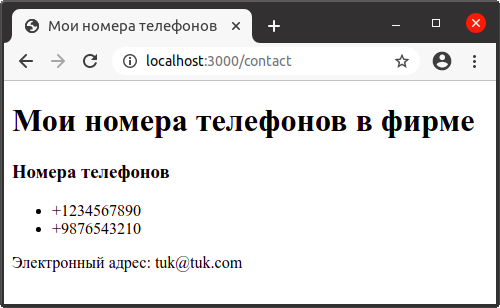

Шаблонизатор PugJS
В приложениях Express для визуализации интерфейса, обычно, используют не стандартные файлы html, а специальные представления (шаблоны), из которых с помощью движка представлений (view engine) создаются html-файлы. Движок представлений еще называют движком шаблонов (template engine) или шаблонизатором, которых для Express написано довольно много: Handlebars, Dust, Pug, Jade, Nunjucks, EJS, и др. Все они функционально похожи и отличаются в небольших деталях. Выбор того или иного движка зависит от личных предпочтений.
Механизм шаблонов позволяет использовать в приложении статические файлы шаблонов (например, написанные на Pug), вместо которых затем вставляется какое-то динамическое содержимое с помощью кода javascript. Во время выполнения переменные в файле шаблона заменяются фактическими значениями, которые могут быть предоставлены вашим сервером. Шаблон преобразуется в статический HTML-файл, который отправляется клиенту. Этот подход упрощает проектирование HTML-страницы и позволяет отображать переменные на странице без необходимости выполнения вызова API от клиента.
Pug - это шаблонизатор и html-препроцессор, написанный на javascript для node.js. Pug имеет целый ряд преимуществ по сравнению с обычным HTML.
Установим пакет шаблонизатора Pug из npm:
$ npm install pug
Создададим файл app.js со следующим кодом:
const express = require('express');
const app = express();
app.set('view engine', 'pug'); // Указывает, что в качестве шаблонизатора используется Pug
/* Нижеприведенную строку кода можно не писать, так как каталог /views устанавливается по умолчанию. */
app.set('views', './views'); // Указывает на каталог, в котором находятся файлы шаблонов.
app.use('/contact', function (req, res) {
res.render('contact', {
//"contact" - это имя файла шаблона в каталоге views
title: 'Мои номера телефонов',
phonesVisible: true,
phones: ['+1234567890', '+9876543210'],
email: 'tuk@tuk.com',
});
});
app.use('/', function (req, res) {
res.send('Главная страница');
});
app.listen(3000);
Затем добавим в папку views файл contact.pug со следующим кодом:
<!DOCTYPE html>
<html>
<head>
<title>#{title}</title> <!-- Для данных внутри html-элементов применяются теги `#{выражение}` -->
<meta name='viewport', content="initial-scale=1.0, width=device-width" />
<meta charset="utf-8" />
</head>
<body>
<h1>#{title} в фирме</h1>
if phonesVisible
<h3>Номера телефонов</h3>
<ul>
each phone in phones
<li>#{phone}</li>
</ul>
else
<h3>Телефоны не указаны</h3>
<p>Электронный адрес: #{email}</p>
</body>
<html>
В коде выше выражение each phone in phones представляет собой цикл. В нем phone - переменная, а phones - массив. Значения из массива phones с помощью перебора подставляются в переменную phone и выводятся на страницу в виде списка. Также в вышеприведенном коде есть условный оператор if...else, который работает также, как и условный оператор в других языках программирования.
Если теперь запустить проект и обратиться по адресу http://localhost:3000/contact приложение сгенерирует веб-страницу:

Pug позволяет писать с помощью сокращенной html-разметки. Перепишем код в файле contact.pug:
doctype html
html
head
title=title
meta(charset='utf-8')
meta(name='viewport', content="initial-scale=1.0, width=device-width")
body
h1 #{title} в фирме
if phonesVisible
h3 Номера телефонов
ul
each phone in phones
li=phone
else
h3 Телефоны не указаны
p Электронный адрес: #{email}